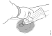

Општо
Овде се опишани работата кои се извршуваат при поправка на оштетени пластични делови од возилото.
Важно
Секогаш, пред да се отпочне со работа треба да се прочитаат предупредувањета за работа со соодветната пластика, наведни на пакувањето на пластиката.
Предупредување
Пластиката и растворувачите испуштаат штетни гасови. Поради тоа, работата треба да се врши во добро проветрени простории и при тоа да се носи заштитна опрема за дишните патишта. Да се избегнува контакт на кожата со пластиката, растворувачите и пластиката која се уште не е стврдната.
Предупредување
При стругањето на пластиката се создава прашина која е штетна по здравје. Треба да се носат заштитни ракавици и заштита за дишните патишта.
Предупредување
Кога пластиката се загрева постои опасност од пожар и изгореници.
Предупредување
Никогаш да не се меша повеќе од 4 dl термосет. Како резултат на високата температура која се јавува при стврднувањето може да дојде до самозапалување на пластиката во садот за мешање.
- Поправка на пластични делови не треба да се извршува при температура помала од 15°C.
- Сите површини кои се поправаат и материјалите кои се користат треба да бидат без влага.
- За да се избегне настанување на воздушни меури, подготвената смеса треба да биде без заробен воздух.
- Времето на стврднување кај термопластиката може да се скрати ако термопластиката се загрее до 70°C.
- Пластични плочи, траки за лепење, инструмент табли од возила, алуминиумски мрежи или одливци можат да се користат како референтни материјали за обука и вежбање.
- За поправка на мали оштетувања потребно е околу еден час. За поголемите оштетувања треба да се процени што е поисплатливо , поправка или замена на делот.
- За фарбањето да се види Фарбање и декорирање.
Термосет
Термосет е пластика која се прави со стврдувач кој ги поврзува молекулите на платиката помеѓу себе. Термосет пластиката е јака, цврста но кршлива. поради тоа често се зајакнува со текстил од стаклени влакна.
{kind=link}
Термопластика
Термопластиката е лиена или вбризгана во калапи и за ралика од термосет пластиката нема врки помеѓу молекулите на пластиката. Поправката на термо пластиката дава добри резултати, но што е подебела пластиката тоа поправката е потешка. За подетална информација околу различните типови на пластика види во Рециклирање.
{kind=link}
Опис на работни задачи
Поправка на термосет
Предупредување
Никогаш немојте да замешувате повеќе од 4dl на термосет. Како резултат на големата температура која се ослободува при стврднувањето на пластиката, може да дојде до само запалување ако голема количина на термосет се остави во садот за мешање.
Важно
Пред да се отпочне со стругање, делот треба внимателно да се очисти за да се спречи, нечистотијата да навлезе во пластиката. Пред нанесување на нов слој на пластика треба да се причека најмногу 12 часа. Ако поминаи повеќе од 12 часа, површината треба одново да се струга пред да се нанесе пластика
{kind=link}
Длабоки оштетувања или пробои поголеми од 2mm
{kind=link}
{kind=link}
{kind=link}
{kind=link}
{kind=link}
{kind=link}
Површински оштетувања, 1-2 mm
| Операција | |
|---|---|
| 1.Да се очисти оштетеното место. |  |
| 2.Да се китира оштетеното место. | |
| 3.Да се ишмиргла областа на оштетувањето и околу оштетувањето со шмиргла бр.120. | |
| 4.Површинскиот слој повторно да се китира со на пример PP Ultima, PP Elastic, PP Fine или соодветни.(PP - Plastic Padding). | |
| 5.Да се ишмиргла областа на оштетувањето и околу оштетувањето со шмиргла бр.240-320. | |
| 6.Да се заврши со нанесување на уште еден слој на кит и шмирглање со шмиргла бр.500. На местото да се нанесе основна боја ако поправката не опфаќа и фарбање. Ако китот не се офарба ќе апсорбира влага. Влагата, со време, ќе го оштети поправеното место и ќе ја отежни понатамошната работа. |
{kind=link}
Пукнатини
Гребнатини
Поправка на термопластика
Со термопластика се работи на два различни начини, со лепење или со заварување.
Кога се заварува, со пиштолот за заварување се загрева пластиката до точка на топење и во исто време се поставуваат посебни метални спојки во пластиката.
{kind=link}
Лепење
Оваа метода генерално меже да се употреби на секој вид на пластика
Со оваа метод успешно се поправаат мали оштетувања на внатрешноста од деловите.
Кога се користи оваа метода не се користат метални спојки.
Матрејали кои се користат во оваа метода:
{kind=link}
-
Срество за чистење Teroson FL
-
Teroson основна подлога, Terokal 150
-
Teroson лепак за поправка на пластика, Terokal 9225
-
Кит, еластичен кит за пластика
-
Кит, еластичен кит за пластика
-
Дво-компонентна завршна боја
{kind=link}
{kind=link}
{kind=link}
{kind=link}
{kind=link}
{kind=link}
Заварување
{kind=link}
-
Спојки за варење
-
Пиштол за варење 588 586
-
Воздушна бризгалка 588 587
-
Бризгалка за заварување 588 588
-
Бризгалка за лепење 588 589
| Вид на пластика | Спојка за заварување - број | Температура на заварување |
|---|---|---|
| PC/ABS | 588 591 | 350 |
| PC/PBT | 588 593 | 350 |
| PE | 588 593 | 270-300 |
| PP, црна | 588 590 | 300 |
| PP, беж | 588 592 | 300 |
| Операција | |
|---|---|
| 1.Да се очисти предната и задната страна на оштетената површина. | |
| 2.Да се идентификува типот на пластика. Типот на пластиката е втисната на пластичното парче. Исто така подледни Рециклирање. | |
| 3.Да се поправи оштетувањето со употреба на втората бризгалка. | |
| 4.Да се иструга бојата на внатрешната страна околу местото на варење. Стругањето е особено важно кај PE пластиката за да се отстранат слоевите на оксиди пред заварувањето. Спојките за заварување за PE пластика исто така треба да се истругаат. | |
| 5.Да се издлаби канал со 90° на внатрешната страна. | |
| 6.Да се одбере соодветна спојка за заварување и да се постави соодветна температура на пиштолот за заварување. -0-1 Исклиучи - Вклучи -2-3 Брзина на вентилаторот, ниска, висока -Копче во средината, подесување на температура |
|
| 7. Да се завари оштетувањето. Да се заварува под агол од 0-30°. На одредени изложени места, може да се заварува над спојките за заварување, на пример на чошови. -Заварен спој -Спој за засилување |
 |
| 8. Да се завари оштетувањето. Да се заварува под агол од 0-30°. На одредени изложени места, може да се заварува над спојките за заварување, на пример на чошови. -Заварен спој -Спој за засилување Да се иструга бојата на надворешната страна околу местото на варење. Стругањето е особено важно кај PE пластиката за да се отстранат слоевите на оксиди пред заварувањето. Спојките за заварување за PE пластика исто така треба да се истругаат. |
|
| 9. Да се издлаби канал со 90° на надворешната страна. |  |
| 10.Да се завари надворечната страна. Брзината на заварување и притисокот зависат од дебелината на материјалот и од длабочината на оштетувањето. Приближно е 15-20cm на минута и притисок од 2kg за 3-4mm дебел материјал. Општо кажано, самиот резултат на заварување кажува дали брзината на заварување и притисокот се исправни. | |
| 11.Ако површината на поправеното оштетувањето треба површински да се третира потребно е да се китира и со еластичен пластичен кит и да се ишмиргла. |
{kind=link}
{kind=link}
{kind=link}
{kind=link}
{kind=link}
Површински третман
Обновувањето на површината треба да се прави со покривна боја чија нијанса одговара на SCANIA возилата.
{kind=link}
-
Да се очисти површината со Teroson FL.
-
Да се измеша бојата со средство за стврднување. На 1000gr боја се додава 120g средство за стврднување.